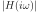
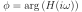
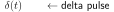
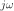

- Impulse Response
The filter is fully characterised by its impulse response 
- Transfer function
The Laplace transform of the impulse response is called
Transfer Function. With the argument
 we
get the frequency
response of the filter. What does the frequency response tell us about
the filter? The absolute value of the
we
get the frequency
response of the filter. What does the frequency response tell us about
the filter? The absolute value of the

(91)
gives us the amplitude or magnitude for every frequency
(compare the Fourier transform).
The angle of the term  gives us the phase shift:
gives us the phase shift:

(92)
of the filter. In this context the group delay can
be defined as:

(93)
which is delay for a certain frequency . In many applications
this should be kept constant for all frequencies.
github / contact